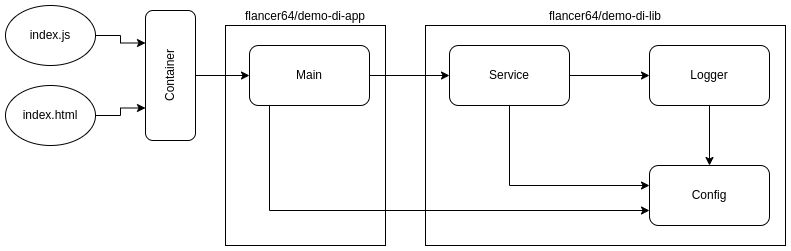

Open the browser console to see console log (F12, "Console" tab).
Expected output:
Sample Lib: Creating logger for 'Sample Lib'. Sample Lib: New instance of the service 'Sample_Lib_Service' is created for the app 'Sample Lib'. Sample App: Library service running with 'Hello from the Web!' param.
This is a web entry point to demonstrate the usage of the same JavaScript code in the browser and Node.js without any transformations, just with dependency injection:
